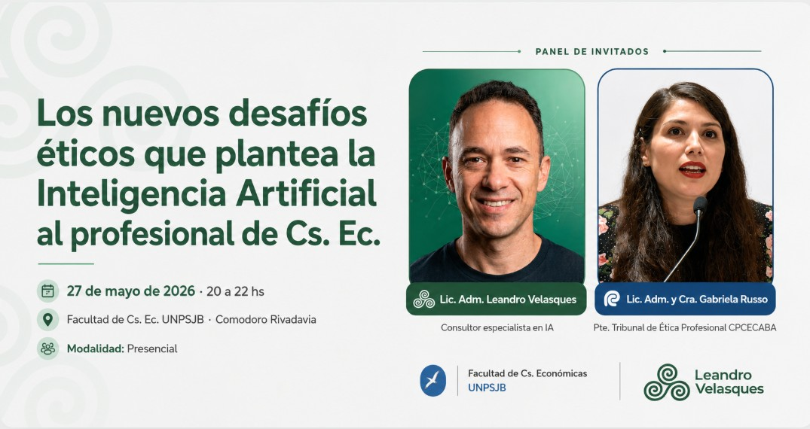
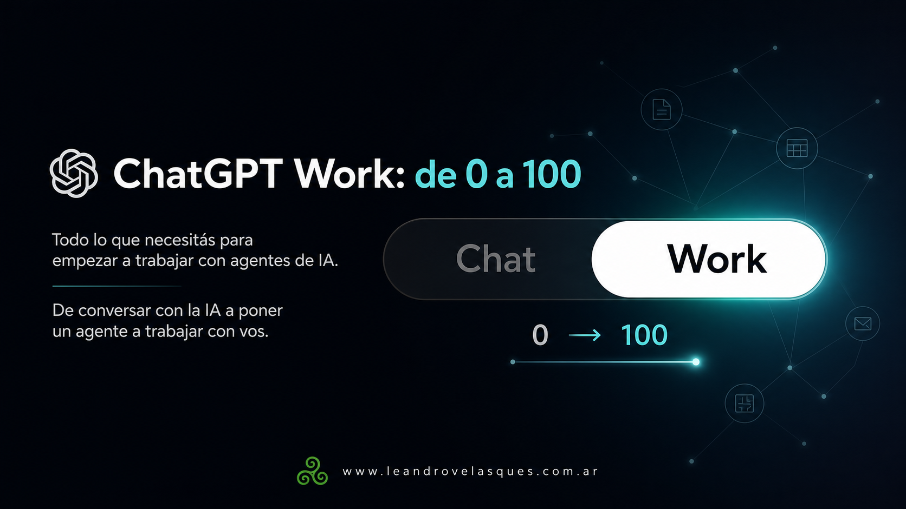
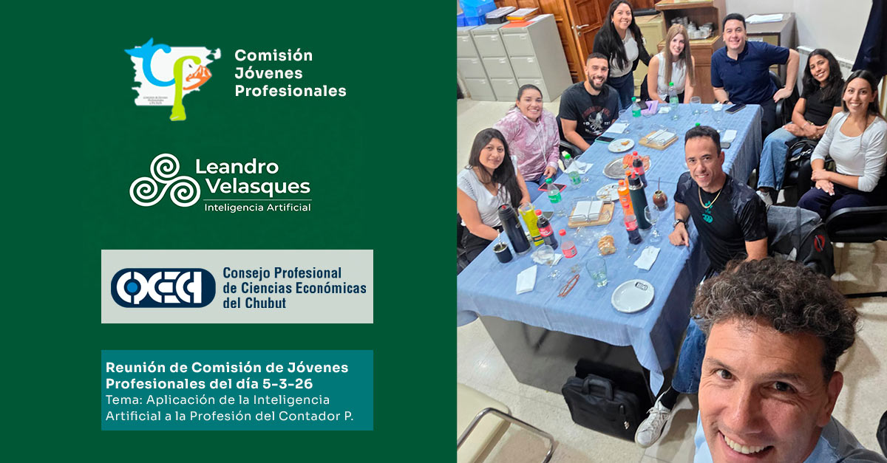
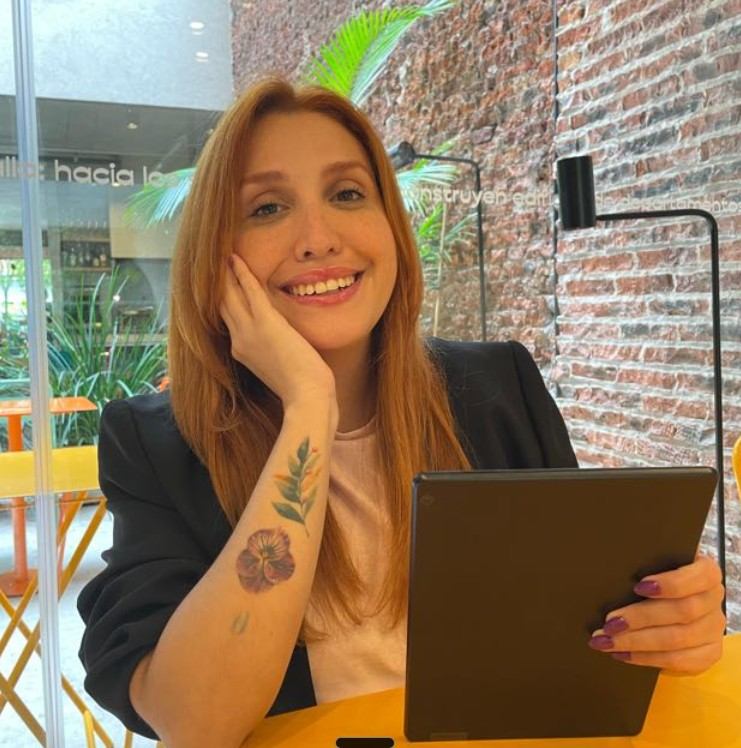

◷ Evento finalizado

CHARLA · FACULTAD DE CIENCIAS ECONÓMICAS
Los nuevos desafíos éticos de la IA
Una conversación sobre los desafíos que plantea la inteligencia artificial en el ejercicio profesional.
IA APLICADA A NEGOCIOS
Acompaño a empresas y equipos a incorporar inteligencia artificial, ordenar sus procesos y fortalecer su presencia digital.
Lic. Leandro Velasques Administración · IA · Marketing digital

ACTIVIDAD RECIENTE
Charlas, talleres y formaciones que muestran el trabajo en movimiento.

TALLER INTENSIVO · CIENCIAS ECONÓMICAS
Un nuevo entorno de trabajo para incorporar agentes de IA con práctica guiada.

CHARLA · FACULTAD DE CIENCIAS ECONÓMICAS
Una conversación sobre los desafíos que plantea la inteligencia artificial en el ejercicio profesional.

ENCUENTRO · CONSEJO PROFESIONAL
Aplicación de la inteligencia artificial a situaciones cotidianas de la profesión contable.

CHARLA · COMODORO CONOCIMIENTO
Una introducción concreta a las posibilidades de la inteligencia artificial en el trabajo.
CÓMO PUEDO AYUDARTE
Formación, implementación y comunicación para resolver necesidades concretas de tu organización.
FORMACIONES REALIZADAS
Cada formato parte de una necesidad concreta: abrir una conversación, aprender haciendo o trabajar sobre los procesos propios de una organización.
Un espacio para entender posibilidades, conocer aplicaciones y conversar sobre los cambios que trae la IA.
Demostraciones y práctica guiada para explorar herramientas, resolver un caso y revisar los resultados.
Encuentros diseñados alrededor de los procesos, documentos y necesidades propias de cada organización.
IA APLICADA E IMPLEMENTACIÓN
Partimos de los puntos donde se acumulan tareas, se repite información o se demora una respuesta. Diseñamos una solución que se integra a la forma real de trabajar de tu equipo.
Cuando la información llega por distintos canales, la reunimos en una herramienta que ordena entradas, confirma cada etapa y deja el seguimiento disponible para el equipo.
Identificamos tareas repetitivas, definimos un modo claro de hacerlas y configuramos asistentes y automatizaciones para preparar respuestas, organizar información y ejecutar acciones programadas.
Desarrollamos sitios, formularios y aplicaciones conectadas para acercar tus servicios, ordenar consultas y simplificar la gestión de cada contacto.
MARKETING DIGITAL
Junto con Daniela Rincón y Hola Agencia, acompañamos la planificación y la gestión de tu comunicación. Un equipo de apoyo para llevar las ideas a la práctica y revisar los siguientes pasos.

Consultoría · IA aplicada
Procesos e implementación

Hola Agencia
Marketing y comunicación
Objetivos, planificación y calendario de contenidos.
Diseño de piezas y fotografía como servicio complementario.
Redes sociales, presencia en Google y seguimiento de consultas.
Sitio web, campañas y herramientas para acompañar cada contacto.
TRABAJO IMPLEMENTADO
Proyectos donde la estrategia, la formación y la comunicación se convierten en trabajo concreto.
DEL DIAGNÓSTICO A LA PRÁCTICA
Comprender, diseñar, implementar y acompañar. Cada etapa ayuda a que la tecnología pueda incorporarse al trabajo cotidiano.
Conocer el proceso, las personas y la necesidad.
Definir prioridades, alcance y una solución posible.
Construir, probar y ajustar junto con el equipo.
Revisar el uso y orientar las siguientes mejoras.
CONVERSEMOS SOBRE TU ORGANIZACIÓN
Una formación para tu equipo, un proceso que necesita orden o una presencia digital más clara. Podemos empezar por ahí.
Contame tu proyecto Lic. Leandro Velasques · Comodoro Rivadavia, Chubut